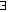

In the Term_ds module term type has a field for storing the set of free variables. This field is supposed to be either VarsDelayed if the set was not computed yet or (Vars s) where s is the set variable names (strings) of all first-order variables occurring free in the term.
The rules for calculating free variables sets are simple:
Example:
x.(x=y)" :
{ free_vars = {"y"}; core = Term
{ opname = "exists"; term_terms =
[ { bvars = "x"; bterm =
{ free_vars={"x","y"}; core = Term
{ opname = "equal"; term_terms =
[ { bvars = []; bterm =
{ free_vars = {"x"}; core = FOVar "x" } } };
{ bvars = []; bterm =
{ free_vars = {"y"}; core = FOVar "y" } } ] } } } ] } }
(Here "opname = ..." is used as an abbreviation for
"term_op = {op_opname = ...; op_params = []}" )
Notes:
Term_ds tries to distinguish a first-order variable "x" (has a free occurrence of "x") and 0-ary second-order variable "x" (does not have any free variables). FO variable "x" is represented as a "special" term (core = FOVar "x") while SO variable "x" is represented as a "usual" term (core = Term t, where t is a term with opname "var", parameter (Var "x") and no subterms)
Since both are indistinguishable in the Term_std, sometimes Term_ds would use FOVar "x" (and consider it a free occurrence of "x") when "x" is actually an SO variable.
When the Subst is created, we first remove all "garbage" from the substitution making sure that all variables that are being substituted for actually occur in the term. That makes computing the free variables set of the substitution easier and prevents us from unnecessary duplication of terms.